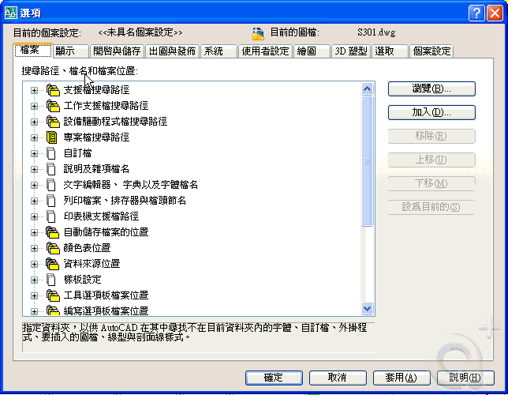

AutoCAD 2010以下版本:
C:\Program Files\AutoCAD 20xx\Fonts
AutoCAD 2011以上版本:
C:\program files\autodesk\autocad 20xx\fonts
使用者自訂新增的字型檔（SHX），為了方便管理及使用，建議新增「資料夾」來區分自訂及預設的資源。
使用者自訂字型檔-新增字型搜尋路徑方式:
1.只要將「SHX字型檔案」解壓縮到 C:\Program Files\SHX 料夾下
2.「選項」對話方塊 →「檔案」→「支援檔搜尋路徑」→「加入」→「瀏覽」

3.以後重新啟動AutoCAD時，開啟圖檔即可正常顯示自訂新增的字型檔（SHX）。
👇延伸閱讀